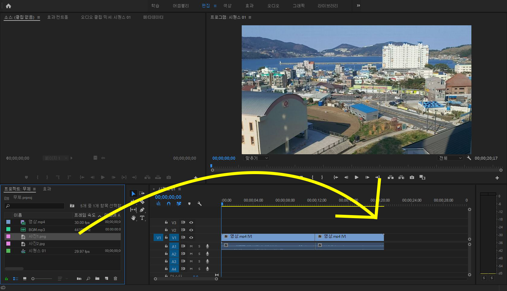
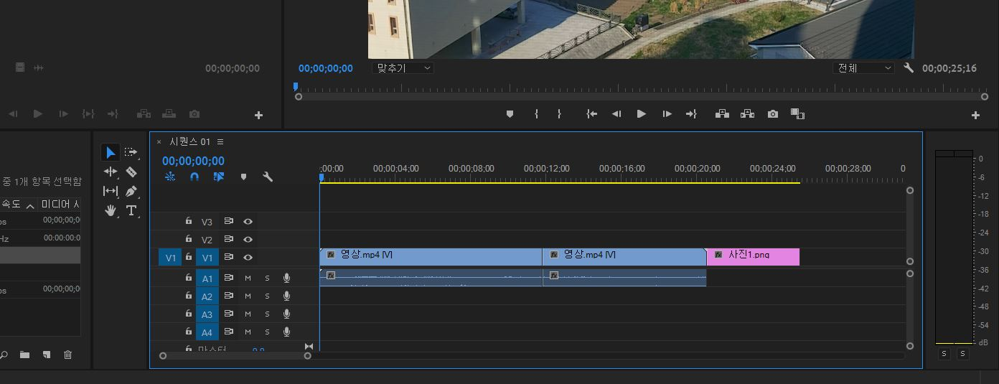
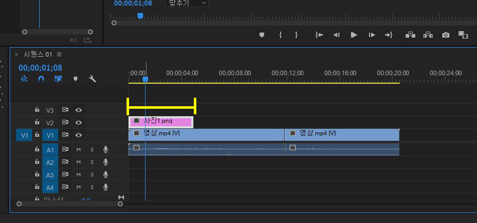

사진 추가
이번에는 영상 위에 사진을 추가하는 법에 대해 알아보겠습니다.
제가 준비한 이 사진을 영상 위에 올려보겠습니다.
사진을 넣는 건 영상을 넣는 것과 똑같이 끝어다 넣어 주시면 됩니다.

저는 이렇게 영상 끝에 사진을 넣어 보았습니다.
그럼 스페이스 바를 눌러 영상을 재생해 봅시다.
음.. 이렇게 하니 영상이 재생되고 나서 사진이 나오는 군요..
저희가 원하는 건 영상 위에 사진이 있게 하는 것입니다.
그럼 어떻게 하면 될까요?
간단합니다. 영상 블럭 위에 사진 블럭을 올리면 끝입니다.!

근데 사진의 길이가 이 정도 밖에 되지 못하네요. 저러면 딱 저만큼만
존재했다가 사라질 것 입니다.
영상 끝까지 저 사진이 계속 있게 하려면 어떻게 해야 할까요?
사진 블럭의 끝부분을 꾹 잡은 채 늘리면 쭉 늘어나는 것을 볼 수 있을
것입니다.
그 상태에서 손을 놓으면?
이렇게 사진 블럭이 영상 블럭과 같은 길이가 되어
영상이 재생되는 동안 사진이 계속 남아 있을 것입니다.
자 이렇게 해서 영상에 사진 추가하기 과정이었습니다.
아직 사진만 올릴 뿐 위치도 원하는 곳에 둘 수 없고 크기도 바꾸지
못합니다.
하지만 지금은 여기서 만족하고 더 많은 것은 "효과" 에서 알아보도록
합시다.
다음은 음악 추가입니다!